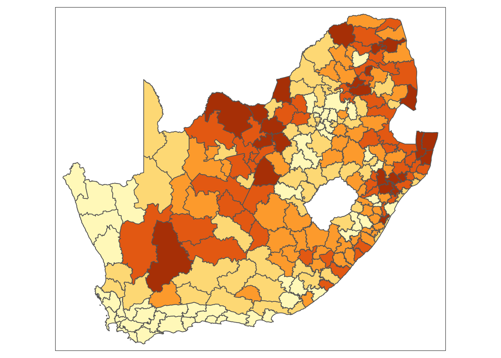
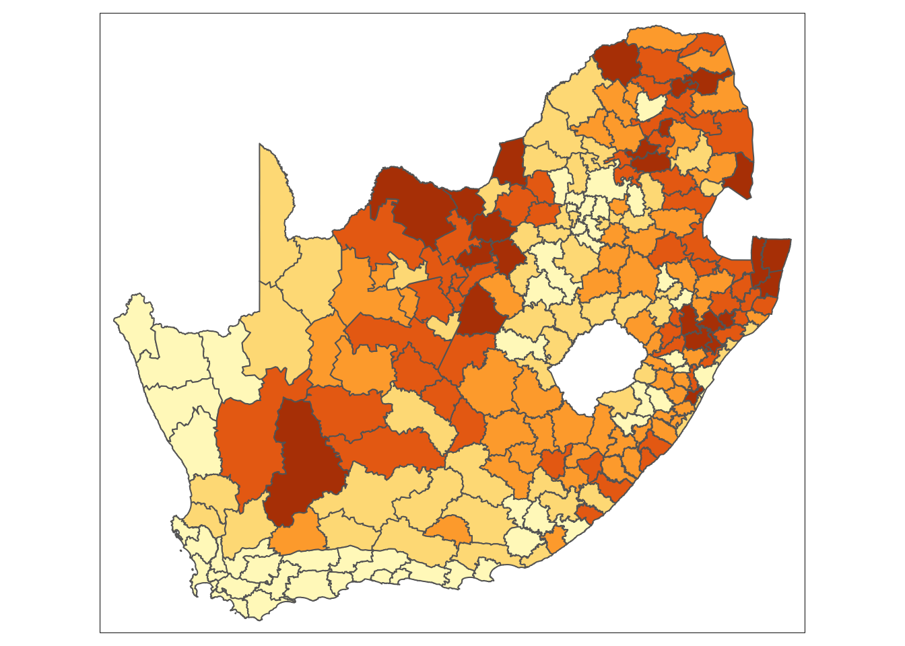
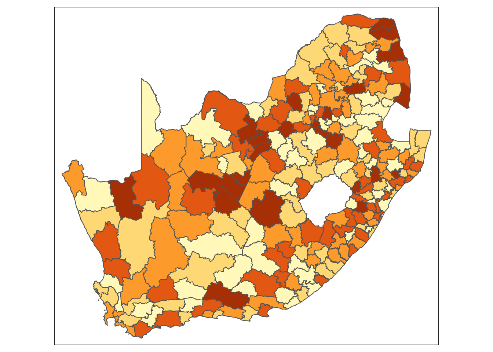

R code
# shape, polygons
tm_shape(sa_municipality) +
# specify column, classes
tm_polygons(
col = "mn_prop_no_schooling",
n = 5,
style = "jenks"
) +
# no legend
tm_layout(
legend.show = FALSE
)
Open a new script within your Geospatial-Workshop24 project and save this as 03-autorrelcation.r. We will start again by loading the libraries that we will need:
R code
# load libraries
library(tidyverse)
library(sf)
library(tmap)
library(spdep)In this session, we will be looking at education, focusing on the number of people with no schooling at the municipal level, as aggregated from the South African Census Community Profiles 2011. Along with this dataset, we also have access to a GeoPackage that contains the spatial boundaries of these municipalities. You can download both files below and save them in your project folder under data/attributes and data/spatial, respectively.
| File | Type | Link |
|---|---|---|
| SA Census 2011 No Schooling Variable | csv |
Download |
| SA Municipalities | GeoPackage |
Download |
Now, we can load both files into memory:
R code
# load spatial data, transform projection
sa_municipality <- st_read("data/spatial/municipality-south-africa-2013.gpkg")Reading layer `municipality-south-africa-2013' from data source
`/Users/justinvandijk/Library/CloudStorage/Dropbox/UCL/Web/jtvandijk.github.io/SA-TIED/data/spatial/municipality-south-africa-2013.gpkg'
using driver `GPKG'
Simple feature collection with 234 features and 19 fields
Geometry type: MULTIPOLYGON
Dimension: XY
Bounding box: xmin: 1831416 ymin: -4141363 xmax: 3667419 ymax: -2526543
Projected CRS: WGS 84 / Pseudo-Mercator# load attribute data
no_schooling <- read_csv("data/attributes/sa-no-schooling.csv")Rows: 234 Columns: 4
── Column specification ────────────────────────────────────────────────────────
Delimiter: ","
chr (1): mn_name
dbl (3): mn_code, mn_pop, mn_no_school
ℹ Use `spec()` to retrieve the full column specification for this data.
ℹ Specify the column types or set `show_col_types = FALSE` to quiet this message.You can further inspect the results using the View() function.
With this dataset, we are interested in analysing the proportion of people without schooling across the country and visualising this information on a map. Let us start by preparing the data for mapping:
R code
# calculate proportions
no_schooling <- no_schooling |>
mutate(mn_prop_no_schooling = mn_no_school / mn_pop)
# join attribute data onto spatial data
sa_municipality <- sa_municipality |>
left_join(no_schooling, by = c("mn_code" = "mn_code"))We can now create a simple map:
R code
# shape, polygons
tm_shape(sa_municipality) +
# specify column, classes
tm_polygons(
col = "mn_prop_no_schooling",
n = 5,
style = "jenks"
) +
# no legend
tm_layout(
legend.show = FALSE
)
If you get the following error when trying to plot the municipality boundaries: Error: Shape contains invalid polygons. Please fix it or set tmap_options(check.and.fix = TRUE) and rerun the plot, run sf_use_s2(FALSE) and try again.
Looking at the map, the geographical patterning of the percentage of the population that did does not have any schooling appears to be neither random nor uniform, with a tendency for similar values to be found in closely located municipalities. Let us compare our map to a map with the same values which have been randomly permutated:
R code
# random permutation
sa_municipality <- sa_municipality |>
mutate(mn_prop_no_schooling_random = sample(sa_municipality$mn_prop_no_schooling, replace = FALSE))
# shape, polygons
tm_shape(sa_municipality) +
# specify column, classes
tm_polygons(
col = "mn_prop_no_schooling_random",
n = 5,
style = "jenks"
) +
# no legend
tm_layout(
legend.show = FALSE
)
Looking at Figure 2, even with the values being randomly permuted, certain patterns seem to emerge. This observation raises an important question: to what extent are the patterns that we see in the actual data actually present? A widely used method to quantify the similarity between neighbouring locations is by calculating Moran’s I statistic. This measure assesses spatial autocorrelation, indicating the degree to which values of a variable cluster spatially — either through similar (positive spatial autocorrelation) or contrasting values (negative spatial autocorrelation, such as the alternating black and white squares on a chessboard).
If the purpose of a Moran’s I test is to quantify how similar places are to their neighbours, the first step is to define what constitutes a neighbour. This definition is not necessarily straightforward, because ‘neighbouring’ observations can be determined in various ways, based on either geometry or proximity. The most common methods include:
To capture this information, we need to formalise the spatial relationships within our data by constructing a spatial weights matrix (\(W_{ij}\)). This matrix defines which units are neighbours based on our chosen criteria.
In the following example, neighbours are defined as places that share a border (i.e., they are contiguous). Currently, it is sufficient for them to meet at a single point — so if two places are triangular, touching corners would count them as neighbours. If, however, you require them to share an edge, rather than just a corner, you can modify the default argument by setting queen = FALSE.
R code
# create neighbourlist
sa_mn_nb <- poly2nb(sa_municipality, queen = TRUE)
# inspect
summary(sa_mn_nb)Neighbour list object:
Number of regions: 234
Number of nonzero links: 1244
Percentage nonzero weights: 2.271897
Average number of links: 5.316239
Link number distribution:
1 2 3 4 5 6 7 8 9 10
1 7 22 35 56 64 40 3 5 1
1 least connected region:
102 with 1 link
1 most connected region:
193 with 10 linksIt is pretty common for the average number of contiguous neighbours to be about five and the most frequent number of contiguous neighbours to be five or six. It suggests that the spatial configuration of the places is loosely approximating a hexagonal tessellation, although places on the edge of a study region will typically have fewer contiguous neighbours then those at the centre.